Profile
- 연락처
- 010-2226-9049
- 이메일
- jonny0010@naver.com
- GitHub
- Jonny-rose-Kim
어떤 사람이고, 어떤 경험을 쌓아 왔는지
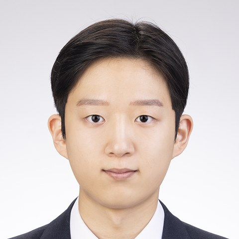
세종대학교 소프트웨어학과 · 3D Vision 연구
3D Reconstruction · Neural Rendering · Super-Resolution · Digital Twin
학력세종대학교 소프트웨어학과 입학
연구Immersive Media Lab 학부연구생
3DGS 품질 개선을 위한 키프레임 선택 (PSNR 평균 3.7% 향상), 렌더링 프레임을 고려한 3DGS 초해상화
발표KCGS 2026 포스터 · 학부생 우수 포스터상
Modutwin: 3DGS 에셋의 문 기반 정합을 통한 모듈형 실내 디지털 트윈
논문WACV 2027 채택
MRSR-NeRF: 다시점 참조 기반 NeRF 초해상화 · ASN 개발, 실험·평가 담당
학력세종대학교 졸업 예정
3D Gaussian Splatting, NeRF, SfM (COLMAP)
Instant-NGP, 볼륨 렌더링 깊이 추출, NeRF 미세 조정
참조 기반 SR, Zero-shot SR, 적응형 샘플링(ASN)
SAM3 분할, LoFTR 특징점 매칭, 3D 문 코너 추정
3DGS 에셋 정제, 메시 텍스처 베이킹, 문 기반 정합, 인터랙션
PSNR, SSIM, LPIPS, NIQE, 베이스라인 재현, Ablation · Python, PyTorch
3D 복원·렌더링 연구를 논문과 포스터, 그리고 동작하는 서비스의 형태로 전달해 왔습니다.
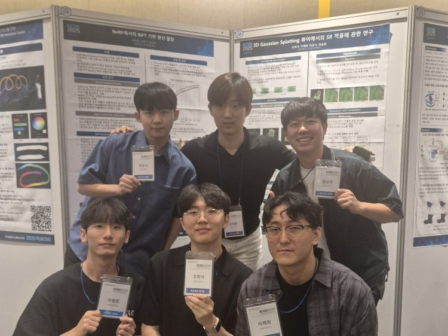
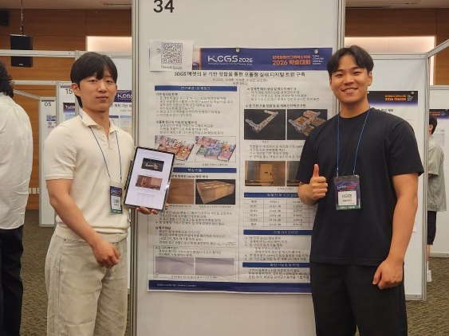
Immersive Media Lab 학부연구생으로 3D Gaussian Splatting의 품질 개선(키프레임 선택)과 초해상화를 연구하며, 3D 복원 품질이 어디서 왜 무너지는지 이해했습니다.
이 경험을 바탕으로 NeRF 초해상화 연구(MRSR-NeRF)와 3DGS 기반 실내 디지털 트윈 구축 프로젝트(Modutwin)를 수행했습니다.
KCGS 2026 포스터 발표에서 복잡한 3D 파이프라인을 단계별로 구조화해 전달했고, 학부생 우수 포스터상을 받았습니다.
연구실에서는 동료가 제안한 회전 각도 관점을 제 가설과 결합해 프레임 스코어링을 개선하는 등, 의견을 적극적으로 주고받으며 문제를 풀어 왔습니다.
3D 장면을 보기 좋게 복원하는 데서 나아가, 관측 데이터로부터 환경·객체·물리적 속성을 복원하는 방향으로 연구를 넓히고자 합니다.
공간을 문 단위로 이해하고 연결한 Modutwin의 경험을 시맨틱 매핑과 Sim-to-Real 환경 모델링으로 확장해, 로봇과 시뮬레이션이 활용할 수 있는 3D 표현을 만드는 연구자로 성장하고자 합니다.
3D Gaussian Splatting 초해상화 연구 경험을 통해, 창의적인 아이디어를 바탕으로 디지털 트윈 서비스 단계까지 확장해 본 경험이 제 강점입니다.
주요 연구 프로젝트
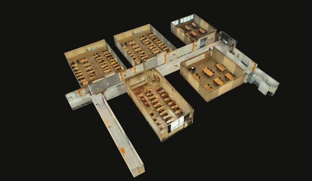
Modular Indoor Digital Twins via Door-Based Alignment of 3D Gaussian Splatting Assets
KCGS 2026, 포스터 학부생 우수 포스터상
방 단위 3DGS 에셋을 깨끗한 모듈로 정제하고 대응하는 문 코너 4개로 서로 정합해, 실내 디지털 트윈을 방 하나씩 확장할 수 있게 합니다.
기여에셋 정제, SAM3 기반 문 추출, 문 기반 정합, 문 인터랙션 등 파이프라인 4단계 전체
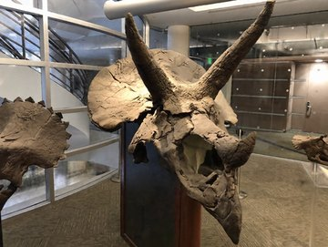
WACV 2027
같은 영역이 더 크게 보이는 인접 시점에서 고주파 텍스처를 가져와 NeRF를 초해상화하는 zero-shot·장면별 프레임워크입니다. 디테일을 지어내지 않으며, 외부 데이터나 사전 학습된 초해상화 모델이 필요 없습니다.
기여적응형 샘플링 네트워크(ASN) 개발, 데이터셋 구성·베이스라인 비교·정량 평가·ablation·계산 비용 분석
3DGS 에셋의 문 기반 정합을 통한 모듈형 실내 디지털 트윈 · KCGS 2026
3D Gaussian Splatting은 높은 시각 품질과 실시간 렌더링 성능으로 실제 공간을 사실적으로 표현할 수 있어, 실내 디지털 트윈 구축에 활용 가능성이 큽니다.
넓은 실내를 하나의 3DGS 에셋으로 만들면 공간이 커질수록 촬영 시간, SfM 처리, 학습 비용이 함께 커지고, 방 하나를 다시 촬영해도 전체를 재처리해야 합니다. 방 단위 에셋을 그대로 이어 붙이면 경계 밖으로 퍼진 Gaussian이 이웃 공간을 침범합니다.
방 단위 3DGS 에셋을 경계면 기준으로 정제해 독립 모듈로 만들고, 두 에셋에 공통으로 있는 문의 네 꼭짓점으로 정합합니다. 추가 학습 없이 디지털 트윈을 방 하나씩 확장할 수 있습니다.
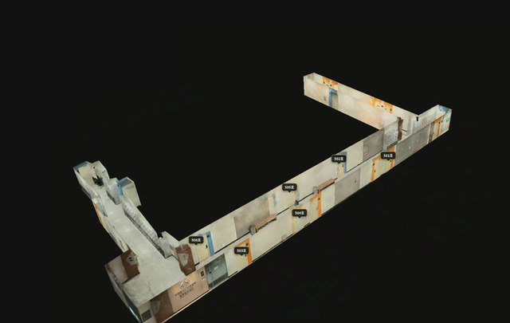
정합 전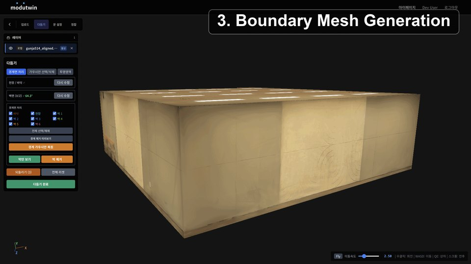
방 바깥의 Gaussian과, 중심이 방 안에 있더라도 렌더링 범위가 경계면을 넘는 Gaussian을 제거하고 그 외관을 경계 메시 텍스처에 베이킹합니다.
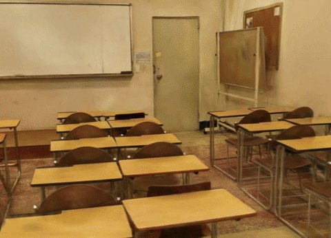
SAM3로 문 영역을 자동 추정하거나 문 꼭짓점을 직접 지정하고, 클릭 광선과 벽 경계면의 교점으로 3D 문 코너를 안정적으로 얻습니다.
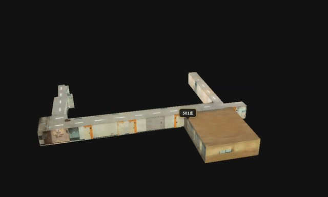
대응하는 문 꼭짓점 4개로 모듈 간 변환 행렬을 계산하고, 이를 이용해 새 방 에셋을 기존 디지털 트윈에 연결합니다.
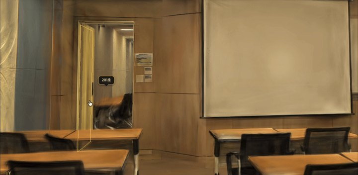
문 영역의 메시와 Gaussian을 여닫을 수 있는 독립 요소로 분리하고, 문 경계를 가로지르는 Gaussian은 내·외부로 나눠 벽 쪽을 보존합니다.
에셋 정제, SAM3 기반 문 추출, 문 기반 정합, 문 인터랙션까지 파이프라인 4단계 전체의 구현에 참여했습니다.
에셋 4개 평균, 같은 카메라 포즈에서 정제 전·후 렌더링 비교
다시점 참조 기반 NeRF 초해상화 · WACV 2027
드론이나 CCTV처럼 입력 이미지가 저해상도인 환경에서는, 입력 해상도에 크게 의존하는 NeRF의 복원 품질이 떨어집니다.
시점마다 단일 이미지 초해상화를 적용하면 존재하지 않는 디테일을 지어내 시점 간 일관성이 깨지고 깜빡임이 생깁니다. 생성 모델 기반 방법은 그럴듯하지만 원본 구조와 색감에서 벗어난 디테일을 만들 수 있습니다.
같은 영역이 인접 시점에서 더 크게 찍힌 실제 픽셀을 참조로 가져와 초해상화합니다. 외부 데이터 없이 장면별로 학습하고, 깊이 기반 교차 어텐션과 ASN으로 정렬한 뒤 초해상화 이미지로 NeRF를 다시 학습합니다.
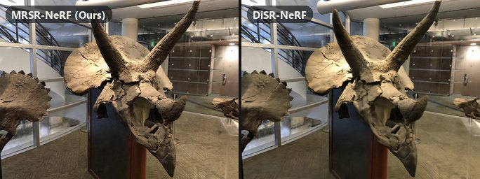
MRSR-NeRF는 DiSR-NeRF보다 시점 간 깜빡임이 훨씬 적으면서 세밀한 디테일을 복원합니다.
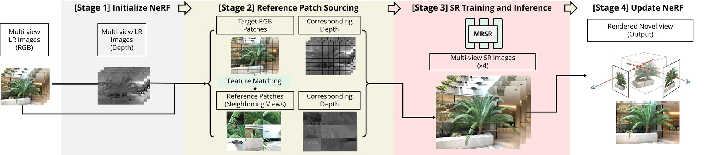
| 방법 | LLFF | NeRF-Synthetic | ||||
|---|---|---|---|---|---|---|
| PSNR ↑ | SSIM ↑ | LPIPS ↓ | PSNR ↑ | SSIM ↑ | LPIPS ↓ | |
| Instant-NGP | 23.16 | 0.7174 | 0.3964 | 26.36 | 0.8981 | 0.1174 |
| NeRF-SR | 23.16 | 0.7177 | 0.3262 | 26.34 | 0.8982 | 0.1169 |
| DiSR-NeRF | 22.73 | 0.7255 | 0.3340 | 25.88 | 0.8971 | 0.1186 |
| MRSR-NeRF | 23.36 | 0.7305 | 0.3244 | 27.31 | 0.9075 | 0.1102 |